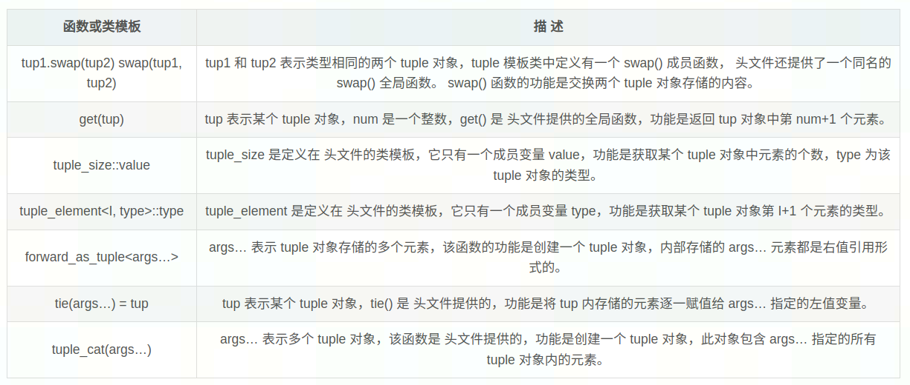

C++98/03暴露出诸多不便的特性，为了能够适应现代编程环境和习惯的变化，C++也孕育出一系列新特性。
C++ 11新特性
C++ auto
在C++11之前, auto关键字用于指明变量的存储类型, 即自动存储的, 这也是编译器的默认规则, 和static关键字相对, 所以写不写都无关紧要.
C++11赋予auto新含义, 用于做自动类型推导, 编译器会在编译期间自动推导出变量的类型.
可以连续定义多个变量, 但要注意二义性的问题:
1 2 3 4 int n = 20 ;auto *p = &n, m = 99 ;
还需要注意的是, 使用auto类型推导的变量必须马上初始化, 因为只有初始化之后, 才能明确auto的类型.
auto用于推倒引用以及和const一起使用时, 有如下特点
1 2 3 4 5 6 7 8 9 10 11 12 int x = 0 ;auto &r1 = x; auto r2 = r1; int x = 0 ;const auto n = x; auto f = n; const auto &r1 = x;auto &r2 = r1;
使用auto时, 必须对变量进行初始化之外, auto还存在以下限制:
auto不能在函数的参数中使用 (本质上还是没有初始化)
auto不能作用于类的非静态成员变量(也就是没有static关键字修饰的成员变量中)
1 2 3 4 5 6 7 8 9 struct Foo {auto x = 1 ; struct Foo {static inline auto y = 1 ;
auto关键字不能定义数组
1 2 3 char ur[] = "https://diffcc.github.io/" ;auto str[] = url;
auto不能作用于模板参数
1 2 3 4 5 6 7 8 9 10 template <typename T>class A {int main () int > C1;auto > C2 = C1; return 0 ;
auto常用的两个用法:
使用auto定义容器的迭代器, 迭代器的书写冗长且复杂
auto用于泛型编程, 当我们不知道变量是什么类型, 或者不希望指明具体类型的时候
C++ decltype
C++ decltype和auto功能一样, 都是用来在编译期进行自动类型推导, 和auto使用的区别如下:
1 2 3 4 5 6 7 8 9 auto varname = value;decltype (exp) varname = value;decltype (exp) varname;
decltype的推导规则有如下三条:
如果exp是一个不被括号( )包围的表达式, 或者是一个类成员访问表达式, 或者是一个单独的变量, 那么decltype(exp)类型就和exp一致, 这是最普遍最常见的情况.
1 2 3 4 5 6 7 8 9 10 11 12 13 14 15 16 17 18 19 20 #include <string> using namespace std;class Student {public :static int total;int age;float scores;int Student::total = 0 ;int main () int n = 0 ;const int &r = n;decltype (n) a = n; decltype (r) b = n; decltype (Student::total) c = 0 ; decltype (stu.name) url = "http://c.biancheng.net/cplus/" ; return 0 ;
如果exp是函数调用, 那么decltype(exp)的类型就和函数返回值的类型一致
1 2 3 4 5 6 7 8 9 10 11 12 13 /函数声明int & func_int_r (int , char ) int && func_int_rr (void ) int func_int (double ) const int & fun_cint_r (int , int , int ) const int && func_cint_rr (void ) int n = 100 ;decltype (func_int_r (100 , 'A' )) a = n; decltype (func_int_rr ()) b = 0 ; decltype (func_int (10.5 )) c = 0 ; decltype (fun_cint_r (1 ,2 ,3 )) x = n; decltype (func_cint_rr ()) y = 0 ;
需要注意的是, exp中调用函数需要带上括号和参数, 这仅仅是形式, 但不会真的去执行函数代码
exp是左值, 或者被括号( )包围, 那么decltype(exp)的类型就是exp的引用；假设exp的类型是 T, 那么decltype(exp)的类型就是T &
1 2 3 4 5 6 7 8 9 10 11 12 13 14 15 16 using namespace std;class Base {public :int x;int main () const Base obj;decltype (obj.x) a = 0 ; decltype ((obj.x)) b = a; int n = 0 , m = 0 ;decltype (n + m) c = 0 ; decltype (n = n + m) d = c; return 0 ;
decltype实际运用中用于替代auto只能用于类的静态成员, 不能用于类的非静态成员的情况
1 2 3 4 5 6 7 8 9 10 11 12 13 14 15 16 17 18 19 20 21 22 23 24 25 26 27 28 29 30 31 #include <vector> using namespace std;template <typename T>class Base {public :void func (T& container) begin ();private :typename T::iterator m_it; int main () const vector<int > v;const vector<int >> obj;func (v);return 0 ;template <typename T>class Base {public :void func (T& container) begin ();private :decltype (T ().begin ()) m_it;
auto和decltype的区别在于:
对于cv限定符: const 和 volatile (const 关键字用于表示数据是只读的, 也就是不能修改, volatile表明数据是可变的, 易变的, 目的是不让CPU将数据缓存到寄存器, 而是从原始的内存中读取) decltype会保留cv限定符 auto对于表达式类型是指针或者引用, auto会保留cv限定符, 如果表达式类型不是指针或者引用, auto会把cv限定符抛弃, 推导成non-const或者non-volatile类型
对于引用的处理: decltype会保留引用类型, 而auto会抛弃引用类型
总结来说: auto书写形式简单直观, 如果表达式类型不复杂, auto关键字比较优雅, 但是decltype比较纯粹, 一般会坚持保留原始表达式的任何类型, 让代码更加健壮
C++返回值类型后置
在泛型编程中，可能需要通过参数的运算来得到返回值的类型
1 2 3 4 5 template <typename T, typename U>auto add (T t, U u) -> decltype (t + u) return t + u;
C++11对模板实例化中连续右尖括号>>的改进
1 2 3 4 5 6 7 8 9 10 11 12 13 14 15 template <typename T>struct Foo typedef T type;template <typename T>class A int main (void ) int >>::type xx; return 0 ;
C++11使用using定义别名（替代typedef）
在C++中, typedef常用于重定义一个类型:
1 2 3 4 5 6 typedef unsigned int uint_t ;void func (unsigned int ) void func (uint_t )
typedef有其不便性, 比如无法重定义一个模板
1 2 3 4 5 6 7 8 9 10 11 12 13 14 15 16 17 18 19 typedef std::map<std::string, int > map_int_t ;typedef std::map<std::string, std::string> map_str_t ;template <typename Val>struct str_map typedef std::map<std::string, Val> type;int >::type map1;template <typename Val>using str_map_t = std::map<std::string, Val>;str_map_t <int > map1;
总的来说, using可以覆盖所有typedef的功能, 而且对于定义模板别名来说, 不需要通过外敷模板
1 2 3 4 5 6 typedef unsigned int uint_t ;using uint_t = unsigned int ;typedef std::map<std::string, int > map_int_t ;using map_int_t = std::map<std::string, int >;
C++11支持函数模板的默认模板参数
在C++98中, 类模板可以有默认的模板参数, 但是却不支持函数的默认模板参数
1 2 3 4 5 6 7 8 9 10 11 12 13 14 15 16 17 18 19 20 template <typename T, typename U = int , U N = 0 >struct Footemplate <typename T = int > void func ()int main (void )func (); return 0 ;
对此, 我们可以指定函数中的一部分模板参数采用默认模板参数
1 2 3 4 5 6 7 8 9 10 11 12 template <typename R = int , typename U>func (U val) return val;int main()func (97) func <char >(97) func <double , int >(97) return 0 ;
C++11在函数模板和类模板中使用可变参数
所谓可变参数, 指的是参数的个数和类型都是任意的, 例如printf()
1 2 3 4 5 6 7 8 9 10 11 int printf (const char * format, ...) printf ("%d %c %f" ,10 , 'A' , 1.23 );void vair_fun (int count, ...) va_start (args, count) va_arg (args, int ) va_end (args)
使用…可变参数, 需要注意以下几点:
… 可变参数必须作为函数的最后一个参数，且一个函数最多只能拥有 1 个可变参数
可变参数的前面至少要有 1 个有名参数（例如上面例子中的 count 参数）
当可变参数中包含 char 类型的参数时，va_arg 宏要以 int 类型的方式读取；当可变参数中包含 short 类型的参数时，va_arg 宏要以 double 类型的方式读取
C++11标准发布之前, 函数模板和类模板只能设定固定数量的模板参数, C++11标准对模板的功能进行了扩展, 运行模板中包含任意数量的模板参数
可变参数函数模板:
1 2 3 4 5 6 7 8 9 10 11 12 13 14 15 16 17 18 19 20 21 22 23 24 25 26 27 28 29 30 31 32 33 34 35 36 37 38 39 40 41 42 43 44 45 46 47 48 49 50 51 52 template <typename ... T>void vair_fun (T...args) vair_fun ();vair_fun (1 , "abc" );vair_fun (1 , "abc" , 1.23 );#include <iostream> using namespace std;void vir_fun () template <typename T, typename ... args>void vir_fun (T argc, args... argv) vir_fun (argv...);int main () vir_fun (1 , "http://www.biancheng.net" , 2.34 );return 0 ;#include <iostream> using namespace std;template <typename T>void dispaly (T t) template <typename ... args>void vir_fun (args... argv) int arr[] = { (dispaly (argv),0 )... };int main () vir_fun (1 , "http://www.biancheng.net" , 2.34 );return 0 ;int arr[] = { (dispaly (1 ),0 ), (dispaly ("http://www.biancheng.net" ),0 ), (dispaly (2.34 ),0 ) };
可变参数类模板:
在C++11中, 类模板的模板参数也可以是一个可变参数, C++11标准提供的typle元组类就是一个典型的可变参数模板类:
1 2 3 4 5 6 7 template <typename ... Types>class tuple ;int > tp1 = std::make_tuple (1 );int , double > tp2 = std::make_tuple (1 , 2.34 );int , double , string> tp3 = std::make_tuple (1 , 2.34 , "http://www.biancheng.net" );
下面是一个支持可变参数的类模板:
1 2 3 4 5 6 7 8 9 10 11 12 13 14 15 16 17 18 19 20 21 22 #include <iostream> template <typename ... Values> class demo ;template <> class demo <> {};template <typename Head, typename ... Tail>class demo <Head, Tail...>private demo<Tail...>public :demo (Head v, Tail... vtail) : m_head (v), demo <Tail...>(vtail...) {dis_head ();void dis_head () protected :int main () demo<int , float , std::string> t (1 , 2.34 , "http://www.biancheng.net" ) ;return 0 ;
C++11 tuple元组
tuple最大的特点是: 实例化的对象可以存储任意数量, 任意类型的数据
1 2 3 4 5 6 7 8 9 10 11 12 13 14 15 16 17 18 19 20 21 22 23 24 25 26 27 28 29 30 31 32 33 34 35 36 37 38 39 #include <tuple> using std::tuple1 ) 默认构造函数constexpr tuple () 2 ) 拷贝构造函数tuple (const tuple& tpl);3 ) 移动构造函数tuple (tuple&& tpl);4 ) 隐式类型转换构造函数template <class ... UTypes>tuple (const tuple<UTypes...>& tpl); template <class ... UTypes>tuple (tuple<UTypes...>&& tpl); 5 ) 支持初始化列表的构造函数explicit tuple (const Types&... elems) template <class ... UTypes>explicit tuple (UTypes&&... elems) 6 ) 将pair对象转换为tuple对象template <class U1 , class U2 >tuple (const pair<U1,U2>& pr); template <class U1 , class U2 >tuple (pair<U1,U2>&& pr); #include <iostream> #include <tuple> using std::tuple;int main () int , char > first; std::tuple<int , char > second (first) ; std::tuple<int , char > third (std::make_tuple(20 , 'b' )) ; std::tuple<long , char > fourth (third) ; std::tuple<int , char > fifth (10 , 'a' ) ; std::tuple<int , char > sixth (std::make_pair(30 , 'c' )) ; return 0 ;
make_tuple() 用于chungking一个tuple右值对象(或者临时对象)
1 2 3 auto first = std::make_tuple (10 ,'a' ); const int a = 0 ; int b[3 ];auto second = std::make_tuple (a,b);
tuple常用函数:

1 2 3 4 5 6 7 8 9 10 11 12 13 14 15 16 17 18 19 20 21 22 23 24 25 26 27 28 29 #include <iostream> #include <tuple> int main () int size;std::tuple<int , char > mytuple (10 , 'x' ) ;decltype (mytuple)>::value;get <0 >(mytuple) << " " << std::get <1 >(mytuple) << std::endl;get <0 >(mytuple) = 100 ;get <0 >(mytuple) << std::endl;auto bar = std::make_tuple ("test" , 3.1 , 14 );const char * mystr = nullptr ;double mydou;int myint;tie (mystr, mydou, myint) = bar;auto mycat = std::tuple_cat (mytuple, bar);decltype (mycat)>::value;return 0 ;
C++11列表初始化(同一初始化方式)
在C++98中， 对于普通数组和POD类型(plain old data，简单来说就是可以直接使用memcpy复制的对象)，可以使用初始化列表（initializer list）进行初始化，C++11提出列表初始化（List-initialization），初始化列表的适用性被大大增加了，可以用于任何类型对象的初始化
1 2 3 4 5 6 7 8 9 10 11 12 13 14 15 16 17 class Foo public :Foo (int ) {}private :Foo (const Foo &);int main (void ) Foo a1 (123 ) ;123 ; 123 };123 };int a5 = { 3 };int a6 { 3 };return 0 ;
在初始化时，{}前面的等于号是否书写对于 初始化行为没有影响。
除了上述内容，列表初始化还可以直接用在函数的返回值上：
1 2 3 4 5 6 7 8 struct Foo Foo (int , double ) {}Foo func (void ) return { 123 , 321.0 };
C++11 lambda匿名函数
语法格式：[外部变量访问方式说明符]（参数）muable noexcept/throw()->返回值类型{函数体;};
外部变量的访问有[=]和[&]两种访问方式
noexcept和throw表明是否会抛出异常
1 2 3 4 5 6 7 8 9 10 11 12 13 14 15 16 17 #include <iostream> using namespace std;int main () auto except = []()throw (int ) {throw 10 ;try {except ();catch (int ) {"捕获到了整形异常" ;return 0 ;
lambda函数内部可以访问全局变量并且修改，如果按值传递[=], 实际上内部是局部变量的备份，并且是const的，不能赋值修改，如果按照引用传递[&], 则可以修改局部变量
1 2 3 4 5 6 7 8 9 10 11 12 13 14 15 16 17 18 19 20 21 22 23 24 25 26 27 28 29 30 31 32 33 34 35 #include <iostream> using namespace std;int all_num = 0 ;int main () int num_1 = 1 ;int num_2 = 2 ;int num_3 = 3 ;"lambda1:\n" ;auto lambda1 = [=]{10 ;" " " " lambda1 ();"lambda2:\n" ;auto lambda2 = [&]{100 ;10 ;20 ;30 ;" " " " lambda2 ();return 0 ;
如果想修改[=]按值传递的变量的值，可以使用mutable关键字
1 2 3 4 5 6 7 8 9 10 auto lambda1 = [=]() mutable {10 ;20 ;30 ;" " " "
C++11非受限联合体
在C++中，联合体（Union）是一种构造数据类型，在一个联合体内，我们可以定义多个不同类型的成员，这些成员将会共享同一块内存空间
在老版本的C++中，对C++联合体的数据类型有较大的限制
C++11取消了这些限制，任何非引用类型都可以称为联合体的数据成员，这种联合体也被称为非受限联合体
1 2 3 4 5 6 7 8 9 10 11 12 13 14 class Student {public :Student (bool g, int a): gender (g), age (a) {}private :bool gender;int age;union T {char name[10 ];int main () return 0 ;
C++11允许非
POD数据有如下特性（包括class，union，struct）“平凡的，标准布局的，通过memcpy拷贝，不会出现问题”：
没有用户自定义的构造函数、析构函数、拷贝构造函数和移动构造函数
不能包含虚函数和虚基类
非静态成员必须声明为 public
类中的第一个非静态成员的类型与其基类不同
1 2 3 class B1 {};class B2 : B1 { B1 b; };
在类或者结构体继承时，满足以下两种情况之一: · 派生类有非静态成员，且只有一个仅包含静态成员的基类 · 基类有非静态成员，而派生类没有非静态成员
所有非静态数据成员均和其基类也符合上述规则（递归定义），也就是说 POD 类型不能包含非 POD 类型的数据。
此外，所有兼容C语言的数据类型都是 POD 类型（struct、union 等不能违背上述规则）
C++11****允许联合体有静态成员：
1 2 3 4 5 6 union U {static int func () int n = 3 ;return n;
C++11规定，如果非受限联合体内有一个非POD成员，而该成员拥有自定义的构造函数，那么这个非受限联合体的默认构造函数将被编译器删除；其他的特殊成员函数，例如默认拷贝构造函数，拷贝赋值操作符以及析构函数，也将被删除
这条规则可能导致对象构造失败：
1 2 3 4 5 6 7 8 9 10 11 12 13 #include <string> using namespace std;union U {int n;int main () return 0 ;
解决上述问题，需要用到placement new
Placement new是new关键字的一种进阶用法，既可以在栈上生成对象，也可以在堆上生成对象，而常见的new的用法是operator new，只能在heap上生成对象
Placement new的语法格式如下：
1 2 3 4 5 6 7 8 9 10 11 12 13 14 15 16 17 18 19 20 21 new (address) ClassConstruct (...)#include <string> using namespace std;union U {int n;public :U () { new (&s) string; }U () { s.~string (); }int main () return 0 ;
匿名联合体：
1 2 3 4 5 6 7 8 9 10 11 12 13 14 15 16 17 18 19 20 21 22 23 24 25 26 27 28 29 30 31 32 33 34 35 36 37 38 39 40 union U {union { int x; }; #include <cstring> using namespace std;class Student {public :Student (bool g, int a): gender (g), age (a){}bool gender;int age;class Singer {public :enum Type { STUDENT, NATIVE, FOREIGENR };Singer (bool g, int a) : s (g, a) { t = STUDENT; }Singer (int i) : id (i) { t = NATIVE; }Singer (const char * n, int s) {int size = (s > 9 ) ? 9 : s;memcpy (name , n, size);'\0' ;Singer (){}private :union {int id;char name[10 ];int main () Singer (true , 13 );Singer (310217 );Singer ("J Michael" , 9 );return 0 ;
C++11 for循环
C++11中使用如下结构的语法，来替代原本通过index索引的for循环结构
1 2 3 4 5 6 7 8 9 10 11 12 13 14 15 16 17 18 19 20 21 22 23 24 25 26 #include <iostream> for (declaration : expression){int main () for (int num : {1 , 2 , 3 , 4 , 5 }) {" " ;for (auto ch : myvector) {char >myvector (arc, arc + 5 );for (auto &ch : myvector) {return 0 ;
declaration 参数既可以定义普通形式的变量，也可以定义引用形式的变量，应该如何选择呢？其实很简单，如果需要在遍历序列的过程中修改器内部元素的值，就必须定义引用形式的变量；反之，建议定义const &（常引用）形式的变量（避免了底层复制变量的过程，效率更高），也可以定义普通变量。
使用for循环时，有如下注意点：
for 循环冒号后还可以放置返回 string 字符串以及容器对象的函数
1 2 3 4 5 6 7 8 9 10 11 12 13 14 15 16 17 18 19 20 21 22 23 24 #include <iostream> #include <vector> #include <string> using namespace std;"http://c.biancheng.net/cplus/11/" ;int > myvector = { 1 ,2 ,3 ,4 ,5 };string retStr () {return str;vector<int > retVector () {return myvector;int main () for (char ch : retStr ()) {for (int num : retVector ()) {" " ;return 0 ;
基于范围的 for 循环不支持遍历函数返回的以指针形式表示的数组，因为for循环只能遍历有明确范围的一组数据
当基于范围的 for 循环遍历的是某函数返回的 string 对象或者容器时，整个遍历过程中，函数只会执行一次
1 2 3 4 5 6 7 8 9 10 11 12 13 14 15 16 17 18 19 #include <iostream> #include <string> using namespace std;"http://c.biancheng.net/cplus/11/" ;string retStr () {"retStr:" << endl;return str;int main () for (char ch : retStr ()) {return 0 ;
对于关联式容器： 不允许修改 map、unordered_map、multimap 以及 unordered_multimap 容器存储的键的值； 不允许修改 set、unordered_set、multiset 以及 unordered_multiset 容器中存储的元素的值。 遍历此类型容器时，切勿修改容器内不允许修改的数据部分，否则会导致程序的执行出现各种BUG
1 2 3 4 5 6 7 8 9 10 11 12 13 14 15 16 17 18 19 20 #include <iostream> #include <vector> int main (void ) int >arr = { 1 , 2 , 3 , 4 , 5 };for (auto val : arr)push_back (10 ); return 0 ;1 -572662307 -572662307 4 5
C++11 constexpr: 验证是否常量表达式
常量表达式指的是有多个（≥1）常量组成的表达式，常量表达式一旦确认，其值将无法修改
1 2 3 4 5 6 7 int url[10 ];int url[6 + 4 ];int length = 6 ;int url[length];
非常量表达式只能在程序运行阶段 计算出结果；而常量表达式的计算往往发生在程序的编译阶段
constexpr 关键字的功能是使指定的常量表达式获得在程序编译阶段计算出结果的能力，而不必等到程序运行阶段(最主要的还是为了提高性能)
constexpr修饰****普通变量
1 2 3 4 5 6 7 8 9 10 11 #include <iostream> using namespace std;int main () constexpr int num = 1 + 2 + 3 ;int url[num] = {1 ,2 ,3 ,4 ,5 ,6 };1 ] << endl;return 0 ;
constexpr修饰函数
constexpr修饰函数返回值，这样的函数被称为“常量表达式函数”，一个函数想要成为常量表达式，必须满足下面四个条件：
整个函数的函数体中，除了可以包含 using 指令、typedef 语句以及 static_assert 断言外，只能包含一条 return 返回语句。
1 2 3 4 5 6 7 8 9 10 11 constexpr int display (int x) int ret = 1 + 2 + x;return ret;constexpr int display (int x) return 1 + 2 + x;
该函数必须有返回值，并且函数返回值的类型不能是void
1 2 3 4 constexpr void display ()
函数在使用之前，必须有对应的定义语句（对于普通函数来讲，函数调用之前看到声明即可，定义可以放在后面，而对于常量表达式函数，必须在调用之前看到对应的定义）
1 2 3 4 5 6 7 8 9 10 11 12 13 14 15 16 17 18 19 20 21 22 23 #include <iostream> using namespace std;int noconst_dis (int x) constexpr int display (int x) constexpr int display (int x) return 1 + 2 + x;int main () int a[display (3 )] = { 1 ,2 ,3 ,4 };2 ] << endl;noconst_dis (3 ) << endl;return 0 ;int noconst_dis (int x) return 1 + 2 + x;
return返回的表达式必须是个常量表达式
1 2 3 4 5 6 7 8 9 10 11 12 13 14 #include <iostream> using namespace std;int num = 3 ;constexpr int display (int x) return num + x;int main () int a[display (3 )] = { 1 ,2 ,3 ,4 };return 0 ;
constexpr修饰类的构造函数
对于C++内置类型的数据, 可以直接使用constexpr修饰, 但是如果是自定义的数据类型, 直接用constexpr修饰是不行的
1 2 3 4 5 6 7 8 9 10 11 12 13 14 15 16 #include <iostream> using namespace std;constexpr struct myType {const char * name;int age;int main () constexpr struct myType mt { "zhangsan" , 10 };" " << mt.age << endl;return 0 ;
正确的做法是在该类型内部添加一个常量构造函数
1 2 3 4 5 6 7 8 9 10 11 12 13 14 15 #include <iostream> using namespace std;struct myType {constexpr myType (char *name,int age) :name(name),age(age){const char * name;int age;int main () constexpr struct myType mt { "zhangsan" , 10 };" " << mt.age << endl;return 0 ;
同样的, constexpr也可以修饰类中的成员函数, 但是需要满足上述提到的4个条件
1 2 3 4 5 6 7 8 9 10 11 12 13 14 15 16 17 18 19 20 21 22 23 24 25 #include <iostream> using namespace std;class myType {public :constexpr myType (const char *name,int age) :name(name),age(age){constexpr const char * getname () return name;constexpr int getage () return age;private :const char * name;int age;int main () constexpr struct myType mt { "zhangsan" , 10 };constexpr const char * name = mt.getname ();constexpr int age = mt.getage ();" " << age << endl;return 0 ;
constexpr修饰模板函数
constexpr 修饰的模板函数实例化结果不满足常量表达式函数的要求，则 constexpr 会被自动忽略，即该函数就等同于一个普通函数
1 2 3 4 5 6 7 8 9 10 11 12 13 14 15 16 17 18 19 20 21 22 23 24 25 26 27 #include <iostream> using namespace std;struct myType {const char * name;int age;template <typename T>constexpr T dispaly (T t) return t;int main () struct myType stu{"zhangsan" ,10 };struct myType ret = dispaly (stu);" " << ret.age << endl;constexpr int ret1 = dispaly (10 );return 0 ;
C++11 constepxr和const的区别
先看一个例子
1 2 3 4 5 6 7 8 9 10 11 12 13 14 15 16 17 18 19 20 21 22 #include <iostream> #include <array> using namespace std;void dis_1 (const int x) int ,x> myarr{1 ,2 ,3 ,4 ,5 };1 ] << endl;void dis_2 () const int x = 5 ;int ,x> myarr{1 ,2 ,3 ,4 ,5 };1 ] << endl;int main () dis_1 (5 );dis_2 ();
C++11标准中, 为了解决const关键字的双重语义问题, 保留const表示"只读"的语义, 而将"常量"的语义划分给了新添加的constexpr关键字.
即凡是表达"只读"语义的场景都使用const, 表达"常量"语义的场景都使用constexpr
"只读"并不意味着其不能被修改, 例如:
1 2 3 4 5 6 7 8 9 10 11 12 13 14 #include <iostream> using namespace std;int main () int a = 10 ;const int & con_b = a;20 ;
C++11 long long超长整形
可以使用头文件中与long long整形相关的3个宏, 分别是LLONG_MIN, LLONG_MAX和ULLONG_MIN
1 2 3 4 5 6 7 8 9 10 11 #include <iostream> #include <iomanip> #include <climits> using namespace std;int main () "long long最大值：" << LLONG_MIN <<" " << hex << LLONG_MIN <<"\n" ;"long long最小值：" << LLONG_MAX << " " << hex << LLONG_MAX << "\n" ;"unsigned long long最大值：" << ULLONG_MAX << " " << hex << ULLONG_MAX;return 0 ;
C++11右值引用
基于右值引用能够引申出2种编程技巧, 分别为移动语义和完美转发
什么为右值:
左值的英文单词为"locator value"(lvalue)意为存储在内存中, 有明确存储地址(可寻址)的数据, 而右值则为"read value"(rvalue),指的是那些可以提供数据值的数据(不一定可以寻址, 例如存储在寄存器中的数据)
可位于赋值号（=）左侧的表达式就是左值；反之，只能位于赋值号右侧的表达式就是右值。
1 2 3 4 5 6 int a = 5 ;5 = a; int b = 10 ;
有名称的、可以获取到存储地址的表达式即为左值；反之则是右值。
右值引用
1 2 3 int num = 10 ;int && a = 10 ;
其实，C++11 标准中对右值做了更细致的划分，分别称为纯右值（Pure value，简称 pvalue）和将亡值（eXpiring value，简称 xvalue ）。其中纯右值就是 C++98/03 标准中的右值（本节中已经做了大篇幅的讲解），而将亡值则指的是和右值引用相关的表达式（比如某函数返回的 T && 类型的表达式）。对于纯右值和将亡值，都属于右值.
C++11****移动语义
在C++11标准之前, 如果想用其他对象初始化一个同类的新对象, 只能借助类中的复制(拷贝)构造函数, 为新对象复制一份和其他对象一模一样的数据
需要注意的是, 当类中拥有指针类型的成员变量时, 拷贝构造函数中需要以深拷贝(而非浅拷贝)的方式复制该指针成员 .
1 2 3 4 5 6 7 8 9 10 11 12 13 14 15 16 17 18 19 20 21 22 23 24 25 26 27 28 29 30 31 32 33 #include <iostream>using namespace std;class demo {public :demo ():num (new int(0 )"construct!" <<endl;demo (const demo &d):num (new int(*d.num)"copy construct!" <<endl;demo ("class destruct!" <<endl;private :get_demo (return demo ();main (get_demo ();return 0 ;
执行 get_demo() 函数内部的 demo() 语句，即调用 demo 类的默认构造函数生成一个匿名对象；
执行 return demo() 语句，会调用拷贝构造函数复制一份之前生成的匿名对象，并将其作为 get_demo() 函数的返回值（函数体执行完毕之前，匿名对象会被析构销毁）；
执行 a = get_demo() 语句，再调用一次拷贝构造函数，将之前拷贝得到的临时对象复制给 a（此行代码执行完毕，get_demo() 函数返回的对象会被析构）；
程序执行结束前，会自行调用 demo 类的析构函数销毁 a。
利用拷贝构造函数实现对 a 对象的初始化，底层实际上进行了 2 次拷贝（而且是深拷贝）操作。当然，对于仅申请少量堆空间的临时对象来说，深拷贝的执行效率依旧可以接受，但如果临时对象中的指针成员申请了大量的堆空间，那么 2 次深拷贝操作势必会影响 a 对象初始化的执行效率
当类中包含指针类型的成员变量, 使用其它对象来初始化同类对象时, C++11通过右值引用,借助它实现移动语义, 避免深拷贝导致的效率问题
**C++**移动构造函数
所谓移动语义, 指的是以移动而非深拷贝的方式初始化含有指针成员的类对象, 移动语义就是将其他对象拥有的内部资源"移为己用"
1 2 3 4 5 6 7 8 9 10 11 12 13 14 15 16 17 18 19 20 21 22 23 24 25 26 27 28 29 #include <iostream>using namespace std;class demo {public :demo ():num (new int(0 )"construct!" <<endl;demo (const demo &d):num (new int(*d.num)"copy construct!" <<endl;demo (demo &&d):num (d.num ){num = NULL ;"move construct!" <<endl;demo ("class destruct!" <<endl;private :get_demo (return demo ();main (get_demo ();return 0 ;
如果使用左值初始化同类对象, 同时也需要调用移动构造函数, 如何实现, 使用std::move()将左值强制转换成对应的右值, 由此便可以实现移动构造函数
std::move()
1 2 3 4 5 6 7 8 9 10 11 12 13 14 15 16 17 18 19 20 21 22 23 24 25 26 27 28 29 30 31 32 #include <iostream> using namespace std;class movedemo {public :movedemo ():num (new int (0 )){"construct!" <<endl;movedemo (const movedemo &d):num (new int (*d.num)){"copy construct!" <<endl;movedemo (movedemo &&d):num (d.num){NULL ;"move construct!" <<endl;public : int *num;int main () "demo2:\n" ;"demo3:\n" ;move (demo);return 0 ;
C++11引用限定符
默认情况下, 对于类中用public修饰的成员函数, 既可以被左值对象调用, 也可以被右值对象调用
1 2 3 4 5 6 7 8 9 10 11 12 13 14 15 16 17 #include <iostream> using namespace std;class demo {public :demo (int num):num (num){}int get_num () return this ->num;private :int num;int main () demo a (10 ) ;get_num () << endl;move (a).get_num () << endl;return 0 ;
某些场景中，我们可能需要限制调用成员函数的对象的类型（左值还是右值），为此 C++11 新添加了引用限定符。所谓引用限定符，就是在成员函数的后面添加 “&” 或者 “&&”，从而限制调用者的类型（左值还是右值）
1 2 3 4 5 6 7 8 9 10 11 12 13 14 15 16 17 18 19 20 21 22 23 24 25 26 27 28 29 30 31 32 33 34 #include <iostream> using namespace std;class demo {public :demo (int num):num (num){}int get_num () &return this ->num;private :int num;int main () demo a (10 ) ;get_num () << endl; return 0 ;#include <iostream> using namespace std;class demo {public :demo (int num):num (num){}int get_num () &&return this ->num;private :int num;int main () demo a (10 ) ;move (a).get_num () << endl; return 0 ;
Const和引用限定符
C++11 标准规定，当引用限定符和 const 修饰同一个类的成员函数时，const 必须位于引用限定符前面
1 2 3 4 5 6 7 8 9 10 11 12 13 14 15 16 17 18 19 20 21 22 23 24 25 26 #include <iostream> using namespace std;class demo {public :demo (int num,int num2) :num (num),num2 (num2) {}int get_num () const &return this ->num;int get_num2 () const && return this ->num2;private :int num;int num2;int main () demo a (10 ,20 ) ;get_num () << endl; move (a).get_num () << endl; move (a).get_num2 () << endl; return 0 ;
C++11完美转发
完美转发: 函数模板可以将自己的参数"完美"地转发给内部调用的其他函数, 所谓完美, 即不仅仅能准确地转发参数的值, 还能保证被转发参数的左, 右值属性不变.
1 2 3 4 5 6 7 8 template <typename T>void function (T t) otherdef (t);
在 C++11 标准中实现完美转发，只需要编写如下一个模板函数即可:
1 2 3 4 5 template <typename T>void function (T&& t) otherdef (t);
通过将函数模板的形参类型设置为 T&&，我们可以很好地解决接收左、右值的问题。但除此之外，还需要解决一个问题，即无论传入的形参是左值还是右值，对于函数模板内部来说，形参既有名称又能寻址，因此它都是左值。那么如何才能将函数模板接收到的形参连同其左、右值属性，一起传递给被调用的函数呢？
通过forward()函数, 可以解决上述问题
1 2 3 4 5 6 7 8 9 10 11 12 13 14 15 16 17 18 19 20 21 22 23 24 25 #include <iostream> using namespace std;void otherdef (int & t) "lvalue\n" ;void otherdef (const int & t) "rvalue\n" ;template <typename T>void function (T&& t) otherdef (forward<T>(t)); int main () function (5 );int x = 1 ;function (x);return 0 ;
C++11 nullptr: 初始化空指针
野指针(悬挂指针): 没有明确指向的指针, 为了避免野指针, 就是在定义指针的同时完成初始化操作，即便该指针的指向尚未明确，也要将其初始化为空指针.
使用NULL会出现以下问题:
1 2 3 4 5 6 7 8 9 10 11 12 13 14 15 16 17 #include <iostream> using namespace std;void isnull (void *c) "void*c" << endl;void isnull (int n) "int n" << endl;int main () isnull (0 );isnull (NULL );return 0 ;
C++11引入nullptr
nullptr是nullptr_t类型的右值常量, 专用于初始化空类型指针, nullptr_t 是 C++11 新增加的数据类型，可称为“指针空值类型”。也就是说，nullpter 仅是该类型的一个实例对象（已经定义好，可以直接使用），如果需要我们完全定义出多个同 nullptr 完全一样的实例对象
不同类型的指针变量都可以使用 nullptr 来初始化，编译器分别将 nullptr 隐式转换成 int*、char* 以及 double* 指针类型
1 2 3 int * a1 = nullptr ;char * a2 = nullptr ;double * a3 = nullptr ;
C++11 shared_ptr智能指针
在实际的C++开发中, 常常会遇到由于内存资源管理不当引起的问题:
有些内存资源已经被释放，但指向它的指针并没有改变指向（成为了野指针），并且后续还在使用；
有些内存资源已经被释放，后期又试图再释放一次（重复释放同一块内存会导致程序运行崩溃）；
没有及时释放不再使用的内存资源，造成内存泄漏，程序占用的内存资源越来越多。
在C++98标准中, 支持使用auto_ptr智能指针来实现堆内存的自动回收, 但是auto_ptr存在如下的一些问题:
当一个auto_ptr对象被复制或赋值给另一个auto_ptr时，它所拥有的资源（内存指针）的所有权会“转移”给新的auto_ptr对象，而原来的auto_ptr则会变为空指针.
由于auto_ptr的复制语义会导致所有权转移，它无法安全地存储在C++的标准容器中, 例如vector扩容时, 内部如果存储的是auto_ptr, 这些操作会导致元素的所有权被意外转移, 破坏容器的内部状态, 最终导致程序崩溃.
auto_ptr在析构时内部使用的是delete，而不是delete[]。这意味着它不能正确地管理动态分配的数组，如果用auto_ptr来管理数组指针，会导致资源泄漏
C++11 新标准在废弃 auto_ptr 的同时，增添了 unique_ptr、shared_ptr 以及 weak_ptr 这 3 个智能指针来实现堆内存的自动回收
shared_ptr智能指针
1 2 3 4 5 6 7 8 9 10 11 12 13 14 #include <memory> using namespace std;int > p1; std::shared_ptr<int > p3 (new int (10 )) ;int > p3 = std::make_shared <int >(10 );
拷贝构造和移动构造函数
1 2 3 4 std::shared_ptr<int > p4 (p3) ;std::shared_ptr<int > p5 (std::move(p4)) ;
P3, P4都是shared_ptr类型的智能指针, 可以用P3来初始化P4, 由于P3是左值, 因此会调用拷贝构造函数, 如果P3是空智能指针, 则P4也为空智能指针, 起引用计数为0; 反之, 则表明P4和P3指向同一块堆内存, 同时该堆内存空间的引用计数会加1.
而对于 std::move(p4) 来说，该函数会强制将 p4 转换成对应的右值，因此初始化 p5 调用的是移动构造函数。另外和调用拷贝构造函数不同，用 std::move(p4) 初始化 p5，会使得 p5 拥有了 p4 的堆内存，而 p4 则变成了空智能指针
1 2 3 4 int * ptr = new int ;std::shared_ptr<int > p1 (ptr) ;std::shared_ptr<int > p2 (ptr) ;
在初始化 shared_ptr 智能指针时，还可以自定义所指堆内存的释放规则，这样当堆内存的引用计数为 0 时，会优先调用我们自定义的释放规则
在某些场景中，自定义释放规则是很有必要的。比如，对于申请的动态数组来说，shared_ptr 指针默认的释放规则是不支持释放数组的，只能自定义对应的释放规则，才能正确地释放申请的堆内存。
1 2 3 4 5 6 7 8 std::shared_ptr<int > p6 (new int [10 ], std::default_delete<int []>()) ;void deleteInt (int *p) delete []p;std::shared_ptr<int > p7 (new int [10 ], deleteInt) ;
借助lambda表达式, 还可以更简便的初始化
1 std::shared_ptr<int > p7 (new int [10 ], [](int * p) {delete []p; }) ;
shared_ptr模板类提供的成员方法
1 2 3 4 5 6 7 8 9 10 11 12 13 14 15 16 17 18 19 20 21 22 23 24 25 26 27 28 29 #include <iostream> #include <memory> using namespace std;int main () std::shared_ptr<int > p1 (new int (10 )) ;std::shared_ptr<int > p2 (p1) ;1. reset ();if (p1) {"p1 不为空" << endl;else {"p1 为空" << endl;2. use_count () << endl;return 0 ;
C++11 unique_ptr智能指针
unique_ptr指针指向的堆内存无法同其它unique_ptr共享, 也就是说, 每个unique_ptr指针都独自拥有对其所指堆内存空间的所有权
也就是每个unique_ptr指针指向的堆内存空间的引用计数, 都只能为1, 一旦该unique_ptr指针放弃对所指堆内存空间的所有权, 该空间会被立刻释放回收.
1 2 3 4 5 6 7 8 9 10 11 12 13 14 15 16 17 18 19 20 21 22 23 24 25 26 27 28 29 30 31 32 33 34 35 36 37 38 39 40 41 42 43 44 45 #include <memory> using namespace std;std::unique_ptr<int > p1 () ;std::unique_ptr<int > p2 (nullptr ) ;std::unique_ptr<int > p3 (new int ) ;std::unique_ptr<int > p4 (new int ) ;std::unique_ptr<int > p5 (p4) ;std::unique_ptr<int > p5 (std::move(p4)) ;template <typename T>class unique_ptr {public :unique_ptr (const unique_ptr&) = delete ;operator =(const unique_ptr&) = delete ;unique_ptr (unique_ptr&& other) noexcept ;operator =(unique_ptr&& other) noexcept ;struct myDel void operator () (int *p) delete p;std::unique_ptr<int , myDel> p6 (new int ) ;
=delete关键字, C++11****引入明确的禁用一个函数, 任何试图调用该函数的代码都会导致编译时错误:
禁用类的特殊成员函数(例如上面的unique_ptr禁止拷贝赋值和拷贝构造)
阻止不期望的类型转换, 类的构造函数可能会导致不期望的隐式类型转换
1 2 3 4 5 6 7 8 9 10 11 12 13 14 15 16 17 18 class MyNumber {public :MyNumber (int value) : m_value (value) {}MyNumber (double value) : m_value (static_cast <int >(value)) {}MyNumber (bool ) = delete ;private :int m_value;int main () MyNumber n1 (123 ) ; MyNumber n2 (45.6 ) ;
禁用特定的模板实例化
当你有一个函数模板时，你可能希望它适用于大多数类型，但对某些特定类型（如 void* 或 char*）禁用，因为它们可能导致不安全的行为。
1 2 3 4 5 6 7 8 9 10 11 12 13 14 15 16 17 18 19 20 template <typename T>void process (T value) "Processing value: " << value << std::endl;template <>void process <char *>(char * value) = delete ;template <>void process <const char *>(const char * value) = delete ;int main () process (10 ); process (3.14 ); "hello" ;process (s);
unique_ptr模板类提供的成员方法
1 2 3 4 5 6 7 8 9 10 11 12 13 14 15 16 17 18 19 20 21 22 23 24 25 26 27 28 #include <iostream> #include <memory> using namespace std;int main () std::unique_ptr<int > p5 (new int ) ;10 ;int * p = p5. release ();if (p5) {"p5 is not nullptr" << endl;else {"p5 is nullptr" << endl;int > p6;6. reset (p);return 0 ;
C++11 weak_ptr智能指针
C++11标准虽然将weak_ptr定位为智能指针的一种, 但是该类型指针通常不单独使用(没有实际的用处), 只能和shared_ptr类型指针单独搭配使用, 可以将 weak_ptr 类型指针视为 shared_ptr 指针的一种辅助工具，借助 weak_ptr 类型指针, 可以获取 shared_ptr 指针的一些状态信息，比如有多少指向相同的 shared_ptr 指针、shared_ptr 指针指向的堆内存是否已经被释放等等.
当 weak_ptr 类型指针的指向和某一 shared_ptr 指针相同时，weak_ptr 指针并不会使所指堆内存的引用计数加 1；同样，当 weak_ptr 指针被释放时，之前所指堆内存的引用计数也不会因此而减 1。也就是说，weak_ptr 类型指针并不会影响所指堆内存空间的引用计数.
weak_ptr 模板类中没有重载 * 和 -> 运算符 ，这也就意味着，weak_ptr 类型指针只能访问所指的****堆内存 ，而无法修改它.
weak_ptr指针的创建
1 2 3 4 5 6 7 8 9 10 #include <memory> using namespace std;int > wp1; std::weak_ptr<int > wp2 (wp1) ; std::shared_ptr<int > sp (new int ) ;std::weak_ptr<int > wp3 (sp) ;
weak_ptr模板类提供的成员方法
再次强调，weak_ptr 模板类没有重载 * 和 -> 运算符，因此 weak_ptr 类型指针只能访问某一 shared_ptr 指针指向的堆内存空间，无法对其进行修改。
1 2 3 4 5 6 7 8 9 10 11 12 13 14 15 16 17 18 19 20 21 22 #include <iostream> #include <memory> using namespace std;int main () std::shared_ptr<int > sp1 (new int (10 )) ;std::shared_ptr<int > sp2 (sp1) ;std::weak_ptr<int > wp (sp2) ;use_count () << endl;2. reset ();use_count () << endl;lock ()) << endl;return 0 ;
C++14新特性
C++14 函数返回值类型推导
C++14支持 对返回类型使用auto推导, 支持对函数和模板
函数:
1 2 3 4 5 6 7 8 9 10 11 12 #include <iostream> using namespace std;auto func (int i) return i;int main () func (4 ) << endl;return 0 ;
模板:
1 2 3 4 5 6 7 8 9 10 #include <iostream> using namespace std;template <typename T> auto func (T t) return t; }int main () func (4 ) << endl;func (3.4 ) << endl;return 0 ;
需要注意的是:
函数内如果有多个return语句，它们必须返回相同的类型，否则编译失败
1 2 3 4 5 auto func (bool flag) if (flag) return 1 ;else return 2.3 ;
如果return语句返回初始化列表，返回值类型推导也会失败
1 2 3 auto func () return {1 , 2 , 3 };
如果函数是虚函数，不能使用返回值类型推导
1 2 3 4 struct A {virtual auto func () return 1 ; }
返回类型推导可以用在前向声明中，但是在使用它们之前，翻译单元中必须能够得到函数定义
1 2 3 4 5 6 auto f () auto f () return 42 ; } int main () f () << endl;
返回类型推导可以用在递归函数中，但是递归调用必须以至少一个返回语句作为先导，以便编译器推导出返回类型
1 2 3 4 5 6 auto sum (int i) {= = 1 )return i; / / return int else return sum (i - 1 ) + i; / / ok
C++14 lambda参数auto
1 2 3 4 5 6 7 auto f = [] (int a) { return a; }auto f = [] (auto a) { return a; };f (1 ) << endl;f (2.3f ) << endl;
C++14 变量模板
对一个变量可以使用模板
1 2 3 4 5 6 7 8 template <class T >constexpr T pi = T (3.1415926535897932385L );int main () int > << endl; double > << endl; return 0 ;
C++14 别名模板
C++14支持别名模板
1 2 3 4 5 6 7 8 9 10 11 12 13 14 15 16 17 template <typename T, typename U>struct A {template <typename T>using B = A<T, int >;int main () double > b;10 ;20 ;return 0 ;
C++14 constexpr限制
C++14相较于C++11对constexpr减少了一些限制:
C++11中constexpr可以使用递归, 在C++14中可以使用局部变量和循环
1 2 3 constexpr int factorial (int n) return n <= 1 ? 1 : (n * factorial (n - 1 ));
在C++14中可以这么做:
1 2 3 4 5 6 7 constexpr int factorial (int n) int ret = 0 ;for (int i = 0 ; i < n; ++i) {return ret;
C++11中constexpr函数必须将所有的东西放在一个单独的return语句中, 而constexpr则无此限制:
1 2 3 4 5 6 7 8 9 constexpr int func (bool flag) return 0 ;constexpr int func (bool flag) if (flag) return 1 ;else return 0 ;
C++14 [[deprecated]]标记
C++ 14增加了deprecated标记, 修饰类, 函数等, 当程序中使用到了被其修饰的代码时，编译时被产生警告，用户提示开发者该标记修饰的内容将来可能会被丢弃，尽量不要使用
1 2 3 4 5 6 7 8 9 10 11 12 13 14 15 struct [[deprecated]] A { };int main () return 0 ;+14 int main ()’:11 :7 : warning: ‘A’ is deprecated [-Wdeprecated-declarations]6 :23 : note: declared herestruct [[deprecated]] A {
C++14 二进制字面量和整形字面量分隔符
C++14引入二进制字面量, 也引入了分割符, 仅仅是为了防止看花
1 2 int a = 0b0001'0011'1010 ;double b = 3.14'1234'1234'1234 ;
C++14 std::make_unique
C++11中只有std::make_shared, 却没有std::make_unique
1 2 struct A {};make_unique <A>();
C++14 std::shared_timed_mutex与std::shared_lock
C++14 通过std::shared_timed_mutex和std::shared_lock来实现读写锁, 保证多个线程可以同时读, 但是写线程必须独立运行, 写操作不可以同时和读操作一起进行.
1 2 3 4 5 6 7 8 9 10 11 12 13 14 15 16 17 18 struct ThreadSafe {mutable std::shared_timed_mutex mutex_;int value_;ThreadSafe () {0 ;int get () const std::shared_lock<std::shared_timed_mutex> loc (mutex_) ;return value_;void increase () std::unique_lock<std::shared_timed_mutex> lock (mutex_) ;1 ;
允许多个读取者 ：多个线程可以同时调用 get() 方法来读取 value_ 的值，它们之间不会相互阻塞。这在“读多写少”的场景下能极大地提高并发性能。只允许一个写入者 ：当一个线程调用 increase() 方法来修改 value_ 时，它必须获得一个排他性的“写锁”。此时，其他任何线程（无论是想读还是想写）都必须等待，直到这个写操作完成。
上述代码使用std::shared_timed_mutex 确保了并发访问的正确性, 同时std::shared_timed_mutex 是一个带有超时功能的读写互斥锁 与普通的 std::shared_mutex 相比，它增加了可以指定“超时时间”的加锁方法**:**
try_lock_for(duration): 尝试在指定的时间段内获取锁。如果成功，返回 true；如果超时仍未获取到，返回 false，线程不会一直阻塞下去。try_lock_until(time_point): 尝试获取锁，直到指定的时间点。
C++14 std::integer_sequence
std::integer_sequence<T, ints…>是一个类模板, 本身在运行时不做任何事情, 全部意义在于编译时表示一个整数序列,
它的主要目的是将一个整数序列封装在一个单一的类型中, 然后可以将这个类型的对象作为函数参数传递, 从而利用模板参数推导来解开(unpack)这个序列, 进而在编译时执行各种操作.
1 2 3 4 5 6 7 8 9 10 11 12 13 14 15 16 template <typename T, T... ints>void print_sequence (std::integer_sequence<T, ints...> int_seq) "The sequence of size " << int_seq.size () << ": " ;' ' ), ...);'\n' ;int main () print_sequence (std::integer_sequence<int , 9 , 2 , 5 , 1 , 9 , 1 , 6 >{});return 0 ;7 9 2 5 1 9 1 6
std::integer_sequence和std::tuple的配合使用：
std::tuple 的元素类型不同，大小在编译时确定。我们无法用一个简单的 for 循环在运行时遍历它，因为 std::get<I>(tuple) 中的 I 必须是一个编译期常量.
解决方法: 通过 std::make_index_sequence 生成一个与元组大小相等的索引序列 (0, 1, 2, ...)，然后利用这个序列来访问元组的每一个元素
1 2 3 4 5 6 7 8 9 10 11 12 13 14 15 16 17 18 19 20 21 22 23 24 25 26 27 28 29 30 31 template <std::size_t ... Is, typename F, typename T>template <typename S, typename F, typename T>auto map_filter_tuple (F&& f, T& t) return map_filter_tuple (S{}, std::forward<F>(f), t);template <std::size_t ... Is, typename F, typename T>auto map_filter_tuple (std::index_sequence<Is...>, F f, T& t) return std::make_tuple (f (std::get <Is>(t))...);std::tuple<int , double , char > my_tuple (10 , 3.14 , 'a' ) ;auto new_tuple = map_filter_tuple<std::make_index_sequence<3 >>(f, my_tuple);
C++14 std::exchange
先看实现:
1 2 3 4 5 6 7 8 9 10 11 12 template <class T, class U constexpr T exchange (T& obj, U&& new_value) move (obj);return old_value;
exchange和核心作用在于用一个新值替换对象原来的值, 并且以返回值的形式"取走"该对象的旧值
1 2 3 4 5 6 7 8 9 10 11 12 int main () int > v; exchange (v, {1 ,2 ,3 ,4 }); size () << endl; for (int a : v) {" " ; return 0 ;
std::exchange 最经典的用途是简化移动构造函数和移动赋值运算符 。
1 2 3 4 5 6 7 8 9 10 11 12 13 14 15 16 17 18 19 20 21 22 23 24 25 26 class MyString {char * data_;size_t size_;public :MyString (MyString&& other) noexcept {nullptr ;0 ;class MyString {char * data_ = nullptr ;size_t size_ = 0 ;public :MyString (MyString&& other) noexcept {exchange (other.data_, nullptr );exchange (other.size_, 0 );
和std::swap的主要区别在于:
1 2 3 4 5 int a = 5 , b = 10 ;swap (a, b); int a = 5 , b = 10 ;int old_a = std::exchange (a, b);
C++14 std::quoted
C++14 引入std::quoted用于给字符串添加双引号
1 2 3 4 5 6 7 8 9 10 11 12 int main () "hello world" ;quoted (str) << endl;return 0 ;+14 "hello world"
C++17新特性
C++17 构造函数模板推导
在C++17前构造一个模板类对象需要指明类型：
1 pair<int , double > p (1 , 2.2 ) ;
C++17就不需要特殊指定，直接可以推导出类型，代码如下：
1 2 pair p (1 , 2.2 ) ; 1 , 2 , 3 };
C++17 结构化绑定
结构化绑定的语法非常直观:
1 auto [name1, name2, ... ] = expression;
在没有结构化绑定之前, 从一个复合对象中取出多个值通常非常繁琐
遍历std
1 2 3 4 5 6 7 8 9 10 int > word_counts;for (const auto & pair : word_counts) {const std::string& word = pair.first;int count = pair.second;": " << count << std::endl;
**处理std tuple
1 2 3 4 5 6 7 8 9 10 11 12 13 14 15 std::tuple<int , double , std::string> get_data () {return {1 , 3.14 , "hello" };auto t = get_data ();int id = std::get <0 >(t);double value = std::get <1 >(t);get <2 >(t);int id_tie;double value_tie;tie (id_tie, value_tie, name_tie) = get_data ();
std::get<index> 的可读性很差，index 必须是编译期常量，而且写错索引号是常见的错误。std::tie 稍微好一点，但要求你必须先声明变量，很啰嗦。
如果使用结构化绑定的语法糖, 就会很简便
1 2 3 4 5 6 7 8 9 10 11 12 13 14 15 16 17 18 19 20 21 22 23 int > word_counts;for (const auto & [word, count] : word_counts) {": " << count << std::endl;std::tuple<int , double , std::string> get_data () {return {1 , 3.14 , "hello" };auto [id, value, name] = get_data ();"ID: " << id << ", Value: " << value << ", Name: " << name << std::endl;
需要注意的是, 结构化绑定不能应用于constexpr(在C++20中可以)
1 constexpr auto [x, y] = std::pair (1 , 2.3f );
结构化绑定不止可以绑定pair和tuple, 还可以绑定数组和结构体等
1 2 3 4 5 6 7 8 9 10 11 12 13 int array[3 ] = {1 , 2 , 3 };" " << b << " " << c << endl;struct Point {int x;int y;func () return {1 , 2 };const auto [x, y] = func ()
还可以实现自定义类的结构化绑定
1 2 3 4 5 6 7 8 9 10 11 12 13 14 15 16 17 18 19 20 21 22 23 24 25 26 27 28 29 30 31 32 33 34 class Entry {public :void Init () "name" ;10 ;std::string GetName () const { return name_; }int GetAge () const return age_; }private :int age_;template <size_t I>auto get (const Entry& e) if constexpr (I == 0 ) return e.GetName () else if constexpr (I == 1 ) return e.GetAge ();namespace std {template <> struct tuple_size <Entry> : integral_constant<size_t , 2 > {};template <> struct tuple_element <0 , Entry> { using type = std::string; };template <> struct tuple_element <1 , Entry> { using type = int ; };int main () Init ();auto [name, age] = e;" " << age << endl; return 0 ;
C++17 if-switch语句初始化
1 2 3 4 5 6 7 8 9 10 11 12 13 14 15 16 int a = GetValue ();if (a < 101 ) {if (int a = GetValue ()); a < 101 ) {"Hi World" ;if (auto [pos, size] = pair (str.find ("Hi" ), str.size ()); pos != string::npos) {" Hello, size is " << size;
C++17 内联变量
C++17前只有内联函数，现在有了内联变量，印象中C++类的静态成员变量在头文件中是不能初始化的 ，但是有了内联变量，就可以达到目的
1 2 3 4 5 6 7 8 9 10 struct A {static const int value; inline int const A::value = 10 ;struct A {inline static const int value = 10 ;
C++17折叠表达式
C++17引入折叠表达式使可变参数模板编程更加方便
1 2 3 4 5 6 7 8 template <typename ... Ts>auto sum (Ts ... ts) return (ts + ...);int a {sum (1 , 2 , 3 , 4 , 5 )}; "hello " };"world" };sum (a, b) << endl;
C++17 constexpr lambda表达式
C++17前lambda表达式只能在运行时使用，C++17引入constexpr lambda表达式，可以在编译期间进行计算
1 2 3 4 int main () constexpr auto lamb = [] (int n) { return n * n; };static_assert (lamb (3 ) == 9 , "a" );
注意：constexpr函数有如下限制：
函数体不能包含汇编语句、goto语句、label、try块、静态变量、线程局部存储、没有初始化的普通变量，不能动态分配内存，不能有new delete等，不能虚函数。
C++17 namepspace嵌套
1 2 3 4 5 6 7 8 9 10 11 12 namespace A {namespace B {namespace C {void func () namespace A::B::C {void func ()
C++17 __has_include预处理表达式
可以判断是否有某个头文件，代码可能会在不同的编译器下工作，不同编译器的可用头文件可能不同，所以可以以此来判断
1 2 3 4 5 6 7 8 9 10 11 12 13 14 15 16 17 18 19 #if defined __has_include #if __has_include(<charconv> ) #define has_charconv 1 #include <charconv> #endif #endif std::optional<int > ConvertToInt (const std::string& str) {int value{};#ifdef has_charconv const auto last = str.data () + str.size ();const auto res = std::from_chars (str.data (), last, value);if (res.ec == std::errc{} && res.ptr == last) return value;#else #endif return std::nullopt ;
C++17 在lambda表达式用*this捕获对象副本
正常情况下，lambda表达式中访问类的对象成员变量需要捕获this，但是这里捕获的是this指针，指向的是对象的引用，正常情况下可能没问题，但是如果多线程情况下，函数的作用域超过了对象的作用域，对象已经被析构了，还访问了成员变量，就会有问题**（悬垂引用）**
1 2 3 4 5 6 7 8 9 10 11 12 13 14 struct A {int a;void func () auto f = [this ] {f ();int main () func ();return 0 ;
C++17新增新特性，捕获*this，不持有this指针，而是持有对象的拷贝，这样生命周期和对象的生命周期就不相关
1 2 3 4 5 6 7 8 9 10 11 12 13 14 struct A {int a;void func () auto f = [*this ] { f ();int main () func ();return 0 ;
C++17 新增Attribute
平时在项目中见过__declspec, attribute , #pragma指示符，使用它们来给编译器提供一些额外的信息，来产生一些优化或特定的代码，也可以给其它开发者一些提示信息
1 2 3 struct A { short f[3 ]; } __attribute__((aligned (8 )));void fatal () __attribute__ ((noreturn))
在C++11和C++14中：
1 2 3 4 5 6 [[carries_dependency]] 让编译期跳过不必要的内存栅栏指令void terminate () noexcept deprecated ("use new func instead" )]] void func ()
C++17新增了三个
1 2 3 4 5 6 7 8 9 10 11 12 13 14 15 16 17 18 19 20 21 22 23 24 25 26 27 28 29 30 switch (i) {}case 1 :case 2 :fallthrough ]]; case 3 :break ;int func () func () int x = 1 ;int y = 2 ;
C++17字符串转换
新增from_chars函数和to_chars函数
1 2 3 4 5 6 7 8 9 10 11 12 13 14 15 16 17 18 19 20 21 22 #include <charconv> int main () const std::string str{"123456098" };int value = 0 ;const auto res = std::from_chars (str.data (), str.data () + 4 , value);if (res.ec == std::errc ()) {", distance " << res.ptr - str.data () << endl;else if (res.ec == std::errc::invalid_argument) {"invalid" << endl;string ("12.34); double val = 0; const auto format = std::chars_format::general; res = std::from_chars(str.data(), str.data() + str.size(), value, format); str = std::string(" xxxxxxxx"); const int v = 1234; res = std::to_chars(str.data(), str.data() + str.size(), v); cout << str << " , filled " << res.ptr - str.data() << " characters \n"; // 1234xxxx, filled 4 characters }
C++17 std::variant
C++17增加std::variant实现union的功能，但却比union更高级，例如union里面不能有string这种类型，但是std::variant可以，可以支持更多复杂类型
1 2 3 4 5 6 7 8 9 10 11 12 13 14 15 16 17 18 19 20 21 22 23 24 25 26 27 28 29 30 31 32 int main () { int , std::string> var ("hello" );var .index() << endl; var = 123 ;var .index() << endl;try {var = "world" ;string str = std::get<std::string>(var ); var = 3 ;int i = std::get<0 >(var ); catch (...) {return 0 ;int i){} int main () {int > var ; var ;
C++17 std::optional
有时候可能会有需求，让函数返回一个对象
1 2 3 4 5 6 7 8 9 10 11 12 13 14 15 16 17 18 19 20 21 22 23 24 25 26 27 28 struct A {};A func () {if (flag) return A ();else {int > StoI (const std::string &s) {try {return std::stoi (s);catch (...) {return std::nullopt ;void func () "123" };int > o = StoI (s);if (o) {else {"error" << endl;
C++17 std::any
C++17引入any可以存储任何类型的单个值
1 2 3 4 5 6 7 8 9 10 11 12 13 14 15 16 int main a.type().name() << " " << std::any_cast<int>(a ) << endl; a = 2.2f; cout << a.type().name() << " " << std::any_cast<float>(a) << endl ;if (a.has_value()) {a.type().name(); } a .reset();if (a.has_value()) {a.type().name(); } a = std::string("a" );a.type().name() << " " << std::any_cast<std::string>(a ) << endl; return 0; }
C++17 std::apply
使用std::apply可以将tuple展开作为函数的参数传入
1 2 3 4 5 6 7 8 9 int add (int first, int second) return first + second; }auto add_lambda = [](auto first, auto second) { return first + second; };int main () apply (add, std::pair (1 , 2 )) << '\n' ;add (std::pair (1 , 2 )) << "\n" ; apply (add_lambda, std::tuple (2.0f , 3.0f )) << '\n' ;
C++17 std::make_from_tuple
使用make_from_tuple可以将tuple展开作为构造参数
1 2 3 4 5 6 7 8 9 struct Foo {Foo (int first, float second, int third) {", " << second << ", " << third << "\n" ;int main () auto tuple = std::make_tuple (42 , 3.14f , 0 );make_from_tuple <Foo>(std::move (tuple));
C++17 std::string_view
通常我们传递一个string时会触发对象的拷贝操作，大字符串的拷贝赋值操作会触发堆内存分配，很影响运行效率，有了string_view就可以避免拷贝操作，平时传递过程中传递string_view即可。
1 2 3 4 5 6 7 8 9 10 11 void func (std::string_view stv) int main (void ) "Hello World" ;std::string_view stv (str.c_str(), str.size()) ;func (stv);return 0 ;
C++17 as_const
C++17使用as_const可以将左值转换成const类型
1 2 std::string str = "str" ;const std::string& constStr = std::as_const (str);
C++17 file_system
C++17正式将file_system纳入标准，提供关于文件的大多数功能
1 2 3 4 5 namespace fs = std::filesystem;create_directory (dir_path);copy_file (src, dst, fs::copy_options::skip_existing);exists (filename);current_path (err_code);
C++17 std::shared_mutex
C++17引入了shared_mutex, 可以实现读写锁
C++20新特性
新增关键字
Concepts(模板约束), 用于定义一个模板参数必须满足一组约束(requirements), 取代了过去晦涩难懂的SFINAE和std::enable_if技术, 让模板约束变得可读,可复用
1 2 3 4 5 6 7 8 9 10 11 12 13 14 15 template <typename T>concept Integral = std::is_integral_v<T>;void print_integer (Integral auto number) "This is an integer: " << number << std::endl;template <Integral T>void process_integer (T number)
Requires : requires关键字有两种主要形式: requires子句(clause) 和 requires表达式(expression)
Requires 子句: 用于将一个concept应用于模板声明, 作为其约束条件
1 2 3 4 5 6 template <typename T>requires Integral<T> void some_function (T value)
Requires表达式: 用于在concept内部详细说明一个类型必须满足的语法要求, 例如它必须满足某个成员函数, 某个表达式必须能够编译等
1 2 3 4 5 6 7 8 9 template <typename T>concept Addable = requires (T a, T b) { template <Addable T>T sum (T a, T b) {return a + b;
consteval和constinit : 进一步强化了C++的编程能力, 提供了比constexpr更严格的保证
Consteval : 声明一个立即函数, 立即函数必须在编译期产生一个常量结果, 任何试图在运行时调用consteval函数都会导致编译错误.
与constexpr的区别: constexpr函数可以在编译期运行, 但如果参数不是常量, 它也可以在运行时运行. consteval则强制函数只能在编译期运行
1 2 3 4 5 6 7 8 consteval int square (int n) return n * n;constexpr int compile_time_sq = square (5 ); int x = 10 ;
Constinit: 断言一个具有静态或线程存储期的变量(即全局变量, 静态变量)必须进行静态初始化(即零初始化或常量初始化)
目的: 解决**“静态初始化顺序惨案”(静态变量在函数执行时会进行初始化, 如果不同文件中的静态变量都要进行初始化, 且存在相互依赖关系, 初始化顺序不定会导致失败),** constinit保证变量的初始化是在编译期或加载时完成的, 不涉及任何运行时的动态执行代码, 从而避免了不同编译单元中静态变量初始化的依赖问题
1 2 3 4 5 constexpr int get_val () return 10 ; }constinit int my_global = get_val ();
Coroutines (协程): co_await, co_return, co_yield
co_await: 协程的暂停点 , 用于等待一个异步操作完成, 当协程co_await一个对象时, 它会暂停自身的执行, 并将控制权交还给调用者或者事件循环, 直到等待的操作完成, 协程才会从暂停点恢复执行, 这个过程不会阻塞线程.
co_return: 用于从协程中返回最终结果, 它类似于普通函数中的return, 但它标志着协程的执行完成, 并将结果传递给等待它的future或promise对象.
co_yield: 用于产生一个值并暂停协程, 主要用于实现生成器(Generator), 当外部代码从生成器中请求一个值时, 协程会执行到co_yield, 产出该值, 然后暂停, 下次请求时, 它会从上次暂停的地方继续执行.
1 2 3 4 5 6 7 8 9 10 11 12 13 Task<std::string> read_file_async (const std::string& path) {auto file = co_await open_file_handle (path); auto content = co_await file.read_all (); co_return content; Generator<int > count_to (int n) {for (int i = 0 ; i < n; ++i) {co_yield i;
新的基本类型: char8_t
引入一个新的基本字符类型, 专门用于表示和存储UTF-8 编码的字符.
解决长期以来的一个类型安全问题, 在C++20之前, UTF-8字符串字面量是const char*, 这使得它与普通的ASCII或其他编码的char 数据无法区分, 容易导致编码错误. char8_t在系统类型中明确了其编码为UTF-8.
1 2 3 4 5 const char8_t * utf8_str = u8"你好, C++20!" ;u8"This is a UTF-8 string." ;
C++20 模块(Modules)
C++20 引入像Python一样模板的概念, 通过export导出, import导入, 模块具备以下的优点:
没有头文件
声明实现仍然可分离, 但非必要
可以显式 指定那些导出(类, 函数等)
不需要头文件重复引入宏 (include guards)
模块之间名称可以相同不会冲突
模块只处理一次, 编译更快 (头文件每次引入都需要处理 )
预处理宏只在模块内有效
模块引入顺序无关紧要
创建模块:
1 2 3 4 5 6 export module cppcon; namespace CppCon { auto GetWelcomeHelper () return "Welcome to CppCon 2019!" ; } export auto GetWelcome () return GetWelcomeHelper ();}
引用模块:
1 2 3 4 5 import cppcon; int main () GetWelcome ();
C++20 import 头文件
传统的#include是一个非常古老且简单的文本替换机制, 当你写 #include "myheader.h" 时，预处理器会找到 myheader.h 这个文件，把它里面的全部文本内容 原封不动地复制粘贴到你写 #include 的地方, 这会带来几个问题:
重复解析 ：如果 100 个 .cpp 文件都 #include <vector>，那么编译器就需要完整地解析和编译 <vector> 的全部源代码 100 次。对于大型项目，这种重复劳动会消耗掉大量的编译时间.缺乏封装 ：头文件必须暴露所有的实现细节，包括私有成员变量、内部使用的辅助函数等。这破坏了封装性，使得 API 接口非常不清晰.脆弱性****与宏污染 (Macro Pollution) ：#include 的内容会受到它被包含位置 之前定义的宏的影响。比如，在 #include <windows.h> 之前 #define max ...，就可能导致 windows.h 内部编译失败, 反之，一个头文件定义的宏会“泄露”出来，影响到 之后**的所有代码。windows.h 定义了 max 宏，这经常与 std::max 发生冲突，是 C++ 程序员的噩梦.
C++20 通过import头文件:
隐式地将 iostream 转换为模块
加速构建, 因为 iostream 只会处理一次
和预编译头 (PCH) 具有相似的效果
传统方式(#include):
1 2 3 4 5 6 7 8 9 10 11 12 13 14 #pragma once int add (int a, int b) #include "math.h" int add (int a, int b) return a + b; }#include <iostream> #include "math.h" int main () add (2 , 3 ) << std::endl;
**C++**20 模块方式(import):
1 2 3 4 5 6 7 8 9 10 11 12 13 14 export module math; export int add (int a, int b) return a + b;import <iostream>; import math; int main () add (2 , 3 ) << std::endl;
C++20 Ranges
Range的核心作用是从根本上简化和增强我们与元素序列(如容器, 数组等)交互的方式, 使代码更具可读性, 组合性和安全性.
Range(范围) : 一个Range是一个单一的对象, 它封装了一个可以迭代的元素序列的概念, 简单来说, 任何拥有begin()和end()的东西(如std::vector, std::string)就是一个Range.
1 2 3 4 5 sort (v.begin (), v.end ());sort (v);
Views(视图)-Ranges: 一个View是一个轻量级的, **非拥有(non-owning)**的Range, 它是对另一个Range的一种"视角"或"适配器".
懒加载 (Lazy Evaluation ：View 的操作（如筛选、转换）不会立即执行。它们只在当您真正需要访问元素时才进行计算。可组合 (Composable) ：这是最具革命性的特性。你可以使用 管道操作符 |高效 ：由于是懒加载且不拥有数据，View 的创建和组合几乎没有运行时开销，也不需要中间临时容器 。
1 2 3 4 5 6 7 8 9 10 11 12 13 14 15 16 17 18 19 #include <ranges> #include <vector> int > numbers = {1 , 2 , 3 , 4 , 5 , 6 , 7 , 8 , 9 , 10 };auto even = [](int n) { return n % 2 == 0 ; };auto square = [](int n) { return n * n; };auto result_view = numbers | std::views::filter (even) transform (square) take (5 ); for (int num : result_view) {" " ;
更多的例子:
串联actions: 排序然后去重, 操作会原地对data进行更改, 然后返回
1 2 vector<int > data{4 , 3 , 4 , 1 , 8 , 0 , 8 }; int > result = data | actions::sort | actions::unique;
过滤和变换: view::int(1)产生一个无限的整数序列, 平方, 取前10个元素, 然后累加(accumulate), 所有的计算延迟到accumulate累加遍历的时候发生
1 2 3 4 5 int total = accumulate (ints (1 ) | transform ([](int i) {return i * i;}) | take (10 ), 0 );
Projections(投影): 投影 允许你告诉算法在操作对象的哪个成员上工作, 而无需编写复杂的lambda比较函数.
假设有一个Struct Person, 需要按照年龄对一个Person的vector进行排序
1 2 3 4 5 6 7 8 9 10 11 12 13 14 struct Person {int age;"Alice" , 30 }, {"Bob" , 25 }, {"Charlie" , 35 }};sort (people.begin (), people.end (), [](const Person& a, const Person& b) {return a.age < b.age;sort (people, {}, &Person::age);
C++20 Lambda表达式的更新
[=, this]需要显式捕获this变量:
C++20之前 [=] 隐式捕获this
C++20开始, 需要显式捕获this: [=, this]
模板形式的Lambda表达式
可以在lambda表达式中使用模板语法
1 2 3 []template <T>(T x) {}; template <T>(T* p) {}; template <T, int N>(T (&a)[N]) {};
原因1:
1 2 3 4 5 6 7 8 9 auto func = [](auto vec){ using T = typename decltype (vec)::value_type; auto func = []<typename T>(vector<T> vec){
原因2: 方便获取通用lambda形参
1 2 3 4 5 6 7 8 9 10 11 12 auto func = [](auto const & x){ using T = std::decay_t <decltype (x)>; static_function (); using Iterator = typename T::iterator; auto func = []<typename T>(const T& x){ static_function (); using Iterator = typename T::iterator;
原因3: 完美转发
1 2 3 4 5 6 7 8 9 auto func = [](auto && ...args) { return foo (std::forward<decltype (args)>(args)...); auto func = []<typename …T>(T&& …args){ return foo (std::forward(args)...);
Lambda表达式****捕获支持打包展开(Pack Expansion)
1 2 3 4 5 6 7 8 9 10 11 12 13 14 15 16 template <class F, class ... Args> auto delay_invoke (F f, Args... args) return [f, args...]{ return std::invoke (f, args...); template <class F, class ... Args> auto delay_invoke (F f, Args... args) return [f = std::move (f), args = std::move (args)...](){ return std::invoke (f, args...);
C++20 常量表达式(constexpr)的更新
constexpr虚函数: constexpr虚函数可以重写非constexpr的虚函数 非constexpr虚函数可以重写constexpr的虚函数
1 2 3 4 5 6 7 8 9 10 11 12 13 14 15 16 17 18 19 20 21 22 23 24 25 26 27 28 29 30 31 32 33 34 35 36 37 #include <iostream> struct Base {virtual constexpr int get_value () const return 1 ; }virtual ~Base () = default ;struct Derived : Base {constexpr int get_value () const override return 10 ; }struct AnotherDerived : Base {int get_value () const override return 100 ; }constexpr int get_result (const Base& obj) return obj.get_value ();int main () constexpr Derived d;static_assert (get_result (d) == 10 );get_result (ad) << std::endl; return 0 ;
constexpr函数可以使用dynamic_cast和typeid 为了配合编译期多态, dynamic_cast和typeid也被扩展到了constexpr上下文中, 允许在编译期进行安全的向下转型和类型识别
1 2 3 4 5 6 7 8 9 10 11 12 13 14 15 16 17 18 19 20 #include <typeinfo> constexpr bool is_derived (const Base& obj) if (typeid (obj) == typeid (Derived)) {return (dynamic_cast <const Derived*>(&obj) != nullptr );return false ;int main () constexpr Derived d;constexpr Base b;static_assert (is_derived (d) == true );static_assert (is_derived (b) == false );
动态分配内存(new / delete): 在一次常量表达式求值中, 任何通过new分配的内存, 都必须在同一次求值结束前通过delete释放, 内存不能从编译期"泄漏"到运行时.
1 2 3 4 5 6 7 8 9 10 11 12 13 14 15 16 17 18 19 20 21 22 23 24 25 26 27 28 #include <numeric> constexpr int sum_first_n (int n) if (n < 0 ) return 0 ;int * arr = new int [n];for (int i = 0 ; i < n; ++i) {1 ;int sum = 0 ;for (int i = 0 ; i < n; ++i) {delete [] arr;return sum;int main () static_assert (sum_first_n (10 ) == 55 );
更改union的活动成员 C++20之前, 在constexpr函数中只能读取union的活动成员, 现在, 可以在编译期改变union的活动成员, 这使得处理更复杂的数据结构成为可能
1 2 3 4 5 6 7 8 9 10 11 12 13 14 15 16 17 union MyUnion {int i;float f;constexpr float process_union () 5 ; int val = u.i;2.5f * val; return u.f;int main () static_assert (process_union () == 12.5f );
Try / catch块 constexpr函数现在可以包含 try / catch块, 这使得更多已有的, 包含错误的库代码可以被constexpr化 在常量求值期间, 执行throw表达式是非法的, 这意味着在static_assert或其他编译期上下文中, catch块必须是不可达的.
1 2 3 4 5 6 7 8 9 10 11 12 13 14 15 16 17 18 19 20 21 22 23 constexpr int divide (int a, int b) {try {if (b == 0 ) {return -1 ; return a / b;catch (...) {return -1 ;int main () {10 , 2 ) == 5 );
这个特性的主要目的是代码复用, 可以编写一个同时用于运行时和编译期的函数, 它在运行时可以处理异常, 而在编译期, 必须保证不会触发异常.
C++20 constexpr string&vector
在 C++20 之前，constexpr 函数中严禁使用 new 和 delete，因为编译期无法管理动态内存。这直接导致了任何依赖动态内存的类型（如 std::vector 和 std::string）都无法在编译期使用.
C++20 改变了这一点，但有一个核心限制：在一次常量表达式求值中，任何 new出来的内存在求值结束前必须被 delete。内存不能从编译期“泄漏”到运行时.
正是这个关键的解锁，才使得 std::vector 和 std::string 的成员函数（如 push_back, resize, append 等）可以被标记为 constexpr
Constexpr std::vector : 在编译期生成一个斐波那契数列
1 2 3 4 5 6 7 8 9 10 11 12 13 14 15 16 17 18 19 20 21 22 23 24 25 26 27 28 29 30 31 32 33 34 35 36 37 38 39 40 41 42 43 44 45 46 47 48 49 50 #include <vector> #include <array> #include <iostream> constexpr auto generate_fibonacci (int n) if (n <= 0 ) {return std::array<long long , 0 >{};long long > fib_vec;push_back (0 );if (n > 1 ) {push_back (1 );for (int i = 2 ; i < n; ++i) {push_back (fib_vec[i - 1 ] + fib_vec[i - 2 ]);long long , 10> result{}; for (size_t i = 0 ; i < result.size () && i < fib_vec.size (); ++i) {return result; constexpr auto fib_sequence = generate_fibonacci (10 );int main () static_assert (fib_sequence[9 ] == 34 );"Compile-time generated Fibonacci sequence:" << std::endl;for (long long val : fib_sequence) {" " ; return 0 ;
Constexpr std **::string : 在编译期构建一个CSV
1 2 3 4 5 6 7 8 9 10 11 12 13 14 15 16 17 18 19 20 21 22 23 24 25 26 27 28 29 30 31 32 33 34 35 36 37 38 39 40 41 42 #include <string> #include <array> #include <iostream> #include <string_view> constexpr auto create_header (std::string_view title, int version) append ("Title: " );append (title);", Version: " ;to_string (version); if (version == 20 ) {"20" ;char , 64> result{};for (size_t i = 0 ; i < result.size () - 1 && i < header.size (); ++i) {return result;constexpr auto header_str = create_header ("MyLib" , 20 );int main () static_assert (std::string_view (header_str.data ()).starts_with ("Title: MyLib" ));data () << std::endl;
未来需要支持constexpr反射
C++20 原子(Atomic)智能指针
智能指针(shared_ptr)线程安全么 ?
是: 引用计数控制单元线程安全, 保证对象只被释放一次
否: 对于数据的读写没有线程安全
如何将智能指针变成线程安全的?
使用 mutex 控制智能指针的访问
使用全局非成员原子操作函数访问, 诸如: std::atomic_load(), atomic_store(), … 缺点: 容易出错, 忘记使用这些操作
C++20: atomic<shared_ptr<T>>, atomic<weak_ptr<T>> 内部原理可能使用了mutex 全局非成员原子操作函数标记为不推荐使用(deprecated)
1 2 3 4 5 6 7 8 9 10 11 12 13 14 15 16 17 18 19 20 21 22 23 24 25 26 27 28 29 30 31 32 33 34 template <typename T> class concurrent_stack { struct Node { public : class reference { auto find (T t) const auto p = head.load (); while (p && p->t != t) return reference (move (p)); auto front () const return reference (head); void push_front (T t) auto p = make_shared <Node>(); while (!head.compare_exchange_weak (p->next, p)){ void pop_front () auto p = head.load (); while (p && !head.compare_exchange_weak (p, p->next)) {
C++20 自动合流(Joining), 可中断(Cancellable)的线程
C++20引入的std::jthread和相关的中断机制(<stop_token>), 解决了长期以来使用std::thread时的两个核心痛点: 资源泄漏 和缺乏协作式中断机制
析构行为危险:
如果一个std::thread对象在析构时, 它所代表的线程仍在运行(既没有被join()等待结束, 也没有被detach()分离), 程序会直接调用std::terminate()导致崩溃
没有内置的中断机制:
std::thread没有提供一种标准的方式来"通知"一个正在运行的线程"停下来", 开发者不得不手动实现一套中断机制, 通常是通过共享一个std::atomic标志, 然后在线程的循环中不断检查这个标志.
std::jthread : 一个更安全的线程类
std::jthread(Joining Thread)可以看作是std::thread的一个智能, 安全的替代品, 它的行为类似于RAII(资源获取即初始化)风格的智能指针.
核心行为: 当一个std::jthread 对象离开其作用域并被析构时, 如果它所关联的线程仍在运行, 它的析构函数会自动调用.join()来等待该线程执行完毕.
1 2 3 4 5 6 7 8 9 10 11 12 13 14 15 16 17 18 void legacy_thread_func () std::thread t ([]{ }) ;if (some_condition) {return ; join (); void modern_thread_func () std::jthread t ([]{ }) ;if (some_condition) {return ;
可中断(Cancellable)线程: 协作式中断机制
std::jthread的另一个强大之处在于它与<stop_token>头文字中定义的中断机制无缝集成, 这是一个协作式(cooperative)的中断模型, 意味着线程不会被强制杀死, 而是被"礼貌地请求"停止, 由线程自己决定在何时何地安全地响应这个请求
这个机制由三个核心组件构成:
std::stop_source (中断请求的发起者)
作用 ：它是一个可以发出“停止请求”的对象 。你可以把它看作是中断信号的“遥控器”或“按钮”。核心方法 ：request_stop()。调用此方法后，所有与此 stop_source 关联的 stop_token 都会变为“停止状态”。std::jthread的集成 ：每个 std::jthread 内部都自动包含 一个 std::stop_source。
std::stop_token (中断状态的查询者)
作用 ：它是一个轻量级的、只能查询的对象 ，用于检查是否已经收到了停止请求。你可以把它看作是中断信号的“接收器”或“状态指示灯”。核心方法 ：stop_requested()。线程内部通过调用这个方法来检查“我是否应该停下来了？”。如果返回 true，就应该准备退出。std::jthread的集成 ：当你创建一个 std::jthread 时，你可以让它的入口函数接受一个 std::stop_token 作为参数，jthread 会自动将它内部 stop_source 对应的 stop_token 传递进去。
std::stop_callback (中断请求的响应器)
作用 ：它是一个 RAII 风格的类，用于注册一个回调函数 。当它所关联的 stop_token 被请求停止时，这个回调函数会被立即同步调用 。核心用途 ：这对于唤醒那些正在阻塞等待 的线程（例如，等待 std::condition_variable）至关重要。
1 2 3 4 5 6 7 8 9 10 11 12 13 14 15 16 17 18 19 20 21 22 23 24 25 26 27 28 29 30 31 32 33 34 35 36 37 38 39 40 41 42 43 44 45 46 47 48 49 50 51 52 53 54 55 56 57 58 59 60 61 62 #include <iostream> #include <thread> #include <stop_token> #include <condition_variable> #include <mutex> #include <chrono> #include <queue> int > task_queue;void worker (std::stop_token token) while (!token.stop_requested ()) { std::unique_lock lock (mtx) ;if (!cv.wait (lock, token, []{ return !task_queue.empty (); })) {"Worker: Stop requested while waiting. Exiting.\n" ;return ;int task = task_queue.front ();pop ();unlock ();"Worker: Processing task " << task << std::endl;sleep_for (std::chrono::milliseconds (100 ));"Worker: Stop requested. Cleanly exiting loop.\n" ;int main () std::jthread worker_thread (worker) ;for (int i = 0 ; i < 5 ; ++i) {sleep_for (std::chrono::milliseconds (200 ));std::lock_guard lock (mtx) ;push (i);notify_one ();"Main: All tasks pushed. Requesting stop.\n" ;return 0 ;
worker 函数接受一个 std::stop_token，这是 jthread 自动传入的。循环的条件是 !token.stop_requested()，这是标准的、非阻塞的检查方式。
cv.wait(lock, token, ...) 是一个关键的 C++20 新重载。它允许 condition_variable_any 不仅可以被 notify 唤醒，也可以被 stop_token 的停止请求“唤醒”。这完美解决了旧的中断模型难以处理阻塞等待的问题。在 main 函数中，我们创建 std::jthread，完全不需要手动管理 stop_source。
当 main 函数结束，worker_thread 的析构函数会自动执行 request_stop()，这会导致 worker 线程中的 token.stop_requested() 变为 true，或者唤醒正在 cv.wait 的线程，从而使线程能够优雅地退出循环并结束。然后，析构函数再安全地 join() 它。
C++20 同步(Synchronization)库
信号量(Semaphores)
头文件:
信号量是一个广义的计数器, 用于管理对有限数量资源的访问:
计数器: 信号量初始计数值为 N
获取资源: 获取资源, N > 0, N–; N = 0, 该任务必须等待(阻塞)
释放资源: N++, 有等待的任务, 此时可以被唤醒进入
两种类型的信号量:
std::counting_semaphore (多元信号量)
最通用的信号量, 计数器可以从N开始, 最大值也是N, 适用于有一组完全相同 的资源池: 1. 数据库连接池 2. 线程池中有限数量的工作线程 3. GPU内存中有限的缓冲区数量
1 2 3 4 5 6 7 8 9 10 11 12 13 14 15 16 17 18 19 20 21 22 #include <iostream> #include <semaphore> #include <thread> #include <vector> std::counting_semaphore<3> semaphore (3 ) ; void access_resource (int id) acquire (); "Thread " << id << " is accessing the resource.\n" ;sleep_for (std::chrono::seconds (1 ));"Thread " << id << " is releasing the resource.\n" ;release (); int main () for (int i = 0 ; i < 10 ; ++i) {emplace_back (access_resource, i);
std::binary_semaphore(二元信号量):
std::counting_semaphore<1> 的特化版本, 计数器只能是0或1.
当资源是独占的(要么可用, 要么不可用)时, 它本质就是一个轻量的, 无所有权的互斥锁(mutex), 它比std::mutex更底层, 因为它不关心是哪个线程release的.
std::atomic的等待和通知接口
为原子变量(如 std::atomic或 std::atomic) 增加了一种高效的等待机制, 以取代消耗CPU的"忙等待"(也叫轮询或者自旋)
忙等待:
1 2 3 4 5 6 7 8 bool > data_ready = false ;void consumer () while (!data_ready.load ()) { }
C++20解决忙等待的方法:
wait(old_value)old_value，则阻塞 当前线程，让出 CPU。notify_one()/ notify_all()notify 来唤醒 一个或所有正在 wait 的线程。
1 2 3 4 5 6 7 8 9 10 11 12 13 14 15 16 17 18 19 20 21 22 23 24 25 26 27 #include <iostream> #include <atomic> #include <thread> #include <chrono> bool > data_ready = false ;void consumer () "Consumer is waiting...\n" ;wait (false ); "Consumer found data is ready!\n" ;void producer () sleep_for (std::chrono::seconds (2 ));"Producer is preparing data...\n" ;store (true );"Producer notifies all.\n" ;notify_all (); int main () std::jthread t1 (consumer) ;std::jthread t2 (producer) ;
这种方式在等待期间基本不消耗CPU, 比忙等待高效得多, 适用于一些比条件变量更简单的"标志位"同步场景
锁存器(Latches)和屏障(Barriers)
锁存器和屏障都是用于群体同步的原语, 即让一组线程在某个点上"集合"或"同步"
std::latch(锁存器):
核心思想 ：一个一次性 的同步屏障。它像一个倒计时门。
初始化 ：创建一个 std::latch(N)，N 是需要等待的线程数。倒计时 ：每个线程完成任务后调用 .count_down()，计数器减一。等待 ：主线程（或任何其他线程）调用 .wait()，它会阻塞在这里。开门 ：当计数器减到 0 时，门被永久打开 ，所有在 wait() 的线程都被释放，并且之后任何调用 .wait() 的线程都会立即通过。
1 2 3 4 5 6 7 8 9 10 11 12 13 14 15 16 17 18 19 20 21 22 #include <iostream> #include <latch> #include <thread> #include <vector> std::latch all_workers_done (3 ) ; void worker (int id) "Worker " << id << " is doing work.\n" ;count_down (); int main () for (int i = 0 ; i < 3 ; ++i) {emplace_back (worker, i);"Main thread is waiting for all workers to finish.\n" ;wait (); "All workers are done. Main thread proceeds.\n" ;
std::barrier(屏障):
核心思想 ：一个可重复使用 的同步点，用于将并行算法分为多个阶段 (phase) 。
初始化 ：创建一个 std::barrier(N)，N 是参与同步的线程数。到达并等待 ：每个线程在一个阶段的末尾调用 .arrive_and_wait()。它会阻塞，直到所有 N 个线程都调用了此方法。阶段完成 ：当第 N 个线程到达时，屏障打开。
可选的完成函数 会被执行（通常由最后一个到达的线程执行）。
所有线程被释放，进入下一个阶段 。
屏障自动重置，为下一阶段的同步做准备。
1 2 3 4 5 6 7 8 9 10 11 12 13 14 15 16 17 18 19 20 21 22 23 24 25 26 27 28 29 30 31 32 #include <iostream> #include <barrier> #include <thread> #include <vector> #include <string> std::barrier sync_point (4 , []() noexcept { std::cout << "----------- Phase Complete -----------\n" ; }) void worker (int id, std::string task) "Worker " << id << " starting " << task << "\n" ;arrive_and_wait (); int main () emplace_back (worker, 1 , "Phase 1: Task A" );emplace_back (worker, 2 , "Phase 1: Task B" );emplace_back (worker, 3 , "Phase 1: Task C" );"Main thread starting Phase 1\n" ;arrive_and_wait (); "Main thread starting Phase 2\n" ;arrive_and_wait ();
C++20 std::atomic_ref
std::atomic_ref允许你将一个普通的, 非原子(non-atomic)的对象, 临时地, 像原子对象一样去操作, 而无需改变这个对象本身的类型.
在C++20之前, 假设你有一个struct或者class, 其中包含一个普通的int成员, 你希望在某个特定的场景下, 对这个int成员进行原子操作, 有两种方式实现:
将 int value; 直接改成 std::atomic<int> value; 这会永久性的改变Counter的含义, std::atomic通常比T本身体积更大, 且可能无法被拷贝或者移动, 这可能会破坏类的其他特性, 在非并发场景下, 访问std::atomic仍然会有原子操作的开销, 这可能是不必要的性能损失
使用std::mutex, 每次访问value时都加锁, 互斥锁的开销通常比原子操作要大得多, 尤其是在低竞争场景下, 需要手动, 正确的管理锁, 容易出错
1 2 3 4 struct Counter {int value;
std::atomic_ref<T> 是一个模板类，它本身不拥有数据，而是引用 一个外部的 T 类型的对象.
1 2 3 4 5 6 7 8 9 10 11 12 13 14 15 16 17 18 19 20 21 22 23 24 25 26 27 28 29 30 31 32 33 34 35 36 37 #include <iostream> #include <atomic> #include <thread> #include <vector> void parallel_sum (int & sum, const std::vector<int >& data, size_t start, size_t end) std::atomic_ref<int > atomic_sum (sum) ;for (size_t i = start; i < end; ++i) {fetch_add (data[i], std::memory_order_relaxed);int main () std::vector<int > data (10000 ) ;for (int i = 0 ; i < 10000 ; ++i) {1 ;int sum = 0 ;std::jthread t1 (parallel_sum, std::ref(sum), std::ref(data), 0 , 5000 ) ;std::jthread t2 (parallel_sum, std::ref(sum), std::ref(data), 5000 , 10000 ) ;1. join ();2. join ();"Sum: " << sum << std::endl;"Expected: " << 50005000 << std::endl;
C++20 指定初始化(Designated Initializers)
1 2 3 4 5 struct Data { int anInt = 0 ; "Hello" };
C++20 航天飞机操作符<=> (三路比较运算符)
1 2 3 4 5 (a <=> b) < 0 0 0
一般情况: 自动生成所有的比较操作符**,** 如果对象是结构体则逐个比较, 可以用下面的代码代替所有的比较运算符
1 auto X::operator <=>(const Y&) = default ;
高级情况: 指定返回类型(支持6种所有的比较运算符)
1 2 3 4 5 6 7 8 9 10 11 12 13 14 15 16 17 18 19 20 21 22 23 24 25 26 27 28 29 30 class Point { int x; int y; public : friend bool operator ==(const Point& a, const Point& b){ return a.x==b.x && a.y==b.y; friend bool operator < (const Point& a, const Point& b){ return a.x < b.x || (a.x == b.x && a.y < b.y); friend bool operator !=(const Point& a, const Point& b) { return !(a==b); friend bool operator <=(const Point& a, const Point& b) { return !(b <a); friend bool operator > (const Point& a, const Point& b) { return b<a; friend bool operator >=(const Point& a, const Point& b) { return !(a<b); #include <compare> class Point { int x; int y; public : auto operator <=>(const Point&) const = default ;
标准库类型支持 : vector, string, map, set, sub_match, …
C++20 范围for循环语句支持初始化语句
switch 语句初始化 (C++17):
1 2 3 4 5 6 7 8 9 10 11 12 13 struct Foo { int value; int result; Foo GetData () { return Foo (); int main () switch (auto data = GetData (); data.value) { case 1 : return data.result;
if 语句初始化 (C++17):
1 2 3 4 5 6 7 8 9 10 11 12 struct Foo { int value; int result; Foo* GetData () {return new Foo (); int main () if (auto data = GetData (); data) {
现在范围 for 循环同样支持初始化 (C++20):
1 2 3 4 5 6 7 8 9 10 11 12 struct Foo { int > values; Foo GetData () { return Foo (); int main () for (auto data = GetData (); auto & value : data.values) {
C++20 非类型模板形参支持字符串
1 2 3 4 5 6 template <auto & s> void DoSomething () int main () DoSomething <"CppCon" >();
C++20 [[likely]], [[unlikely]]
先验概率指导编译器优化
1 2 3 4 5 switch (value) { case 1 : break ; case 2 : break ; case 3 : break ;
C++20 日历(Calendar)和时区(Timezone)功能
增加日历和时区的支持
只支持公历(Gregorian calendar)
初始化年, 月, 日的方法
1 2 3 4 5 6 7 8 9 auto y1 = year{ 2019 }; auto y2 = 2019y; auto m1 = month{ 9 }; auto m2 = September; auto d1 = day{ 18 }; auto d2 = 18d ;
创建完整的日期
1 2 3 year_mouth_day fulldate1{2019 y, September, 18 d}; auto fulldate2 = 2019 y / September / 18 d; 3 ]/September/2019 };
新的事件间隔单元, 类似于秒, 分钟,…
1 2 3 4 5 6 7 using days = duration<signed interger type of at least 25 bits, 24 >, hours::period>>; using weeks = ...; using mouths = ...; using years = ...;1 };
C++20 std:span
提供一个统一的, 非拥有所有权的, 轻量级的视图(view)来表示任意的连续内存块
可以将其理解为"一个知道自己长度的智能指针", 或者是"std::string_view的泛型版本", std::string_view用于处理字符串, 而std::span用于处理任何类型的连续数据
在 C++20 之前，如果你想编写一个函数来处理一块连续的数据（比如，计算一个数组的总和），你通常会遇到 API 设计的难题：
1 2 3 4 int c_style_array[] = {1 , 2 , 3 , 4 , 5 };int > my_vector = {6 , 7 , 8 };int , 3> my_array = {9 , 10 , 11 };
在C++20之前, 可以这么做:
1 2 3 4 5 6 7 8 9 10 11 12 13 14 15 16 17 18 long long sum_elements (const int * data, size_t size) template <typename Container>long long sum_elements (const Container& cont) long long sum_elements (const std::vector<int >& vec) long long sum_elements (const std::array<int , 3 >& arr)
C++20 std::span
1 2 3 4 5 6 7 8 9 10 11 12 13 14 15 16 17 18 19 20 21 22 23 24 25 26 27 28 29 30 31 32 33 34 35 36 37 38 39 40 41 42 43 44 45 46 47 48 #include <span> #include <numeric> long long sum_elements (std::span<const int > data) long long sum = 0 ;for (int val : data) {return sum;int ` 序列，但我不在乎它来自哪里，也不负责管理它的生命周期。”#include <iostream> #include <vector> #include <array> #include <span> int main () int c_style_array[] = {1 , 2 , 3 , 4 , 5 };"Sum of C array: " << sum_elements (c_style_array) << std::endl;int > my_vector = {6 , 7 , 8 };"Sum of vector: " << sum_elements (my_vector) << std::endl;int , 3> my_array = {9 , 10 , 11 };"Sum of array: " << sum_elements (my_array) << std::endl;std::span<const int > sub_vector_span (my_vector.begin() + 1 , 2 ) ;"Sum of sub-vector: " << sum_elements (sub_vector_span) << std::endl;std::span<int > modifiable_span (c_style_array) ;0 ] = 100 ; "C array first element after modification: " << c_style_array[0 ] << std::endl;
std::span的非拥有所有权(Non-owning), 不负责其指向的内存的分配和释放, 它只是一个临时的"视图"或"句柄", 意味着std::span可能会悬空(dangle), 如果原始数据容器被销毁了, 指向它的span就会变得无效, 使用它将导致未定义行为, 它的生命周期管理规则与引用和指针类似.
C++20 特性测试宏
通过特性宏可以判断编译器是否支持某个功能, 例如:
语言特性:
__has_cpp_attribute(fallthrough)__cpp_binary_literals__cpp_char8_t__cpp_coroutines
标准库特性:
__cpp_lib_concepts__cpp_lib_ranges__cpp_lib_scoped_lock
C++20 用using引用enum类型
1 2 3 4 5 6 7 8 9 10 11 12 13 14 15 16 17 18 19 20 21 22 23 24 25 26 27 enum class CardTypeSuit { std::string_view GetString (const CardTypeSuit cardTypeSuit) { switch (cardTypeSuit) { case CardTypeSuit::Clubs: return "Clubs" ; case CardTypeSuit::Diamonds: return "Diamonds" ; case CardTypeSuit::Hearts: return "Hearts" ; case CardTypeSuit::Spades: return "Spades" ; std::string_view GetString (const CardTypeSuit cardTypeSuit) { switch (cardTypeSuit) { using enum CardTypeSuit ; case Clubs: return "Clubs" ; case Diamonds: return "Diamonds" ; case Hearts: return "Hearts" ; case Spades: return "Spades" ;
不展开, 类似于Python的格式化
1 std::string s = std::format("Hello CppCon {}!" , 2019 );
其他
增加数字常量
头文件
包含 e, log2e, log10e pi, inv_pi, inv_sqrt pi ln2, ln10 sqrt2, sqrt3, inv_sqrt3 egamma
std::source_location
用于获取代码位置, 对于日志和错误信息尤其有用
[[nodiscard(reason)]]
表明返回值不可抛弃, 加入理由的支持
1 2 [[nodiscard ("Ignoring the return value will result in memory leaks." )]] void * GetData ()
位运算
加入循环移位, 计数0和1位等功能
其他小更新
字符串支持 starts_with, ends_with
map 支持 contains 查询是否存在某个键
list 和 forward list 的 remove, remove_if 和 unique 操作返回 size_type 表明删除个数
增加 shift_left, shift_right
midpoint 计算中位数, 可避免溢出lerp 线性插值 lerp( float a, float b, float t ) 返回 [外链图片转存失败,源站可能有防盗链机制,建议将图片保存下来直接上传(img-SIYwBQJu-1628786141278)(https://www.zhihu.com/equation?tex=a+%2B+t(b-a) ])
新的向量化策略 unsequenced_policy(execution::unseq)